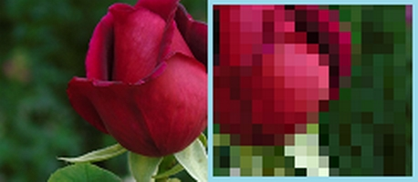
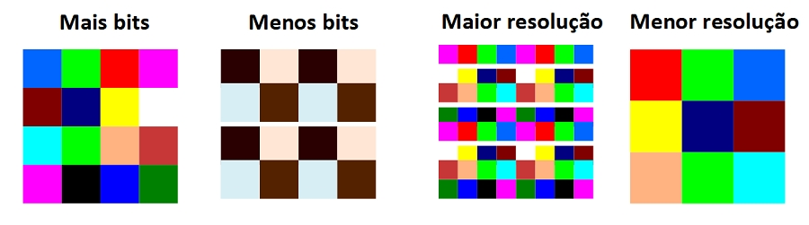

Bitmaps são matrizes de bits que definem as cores de cada pixel numa matriz de pixels, a quantidade de bits é o que definirá a quantidade de cores que podem ser atribuídas a cada pixel, de sorte que quanto maior for a quantidade de bits, maior variação de cor, e consequentemente maior qualidade terá a imagem. Por exemplo, uma imagem bitmap de 2 bits, poderá possuir apenas quatro cores, ou seja, 2 elevado a 2. Enquanto uma imagem de 16 bits, poderá possuir 65.536 cores, ou seja, 2 elevado a 16. Enquanto isso, a quantidade de pixels define a resolução da imagem.
Uma imagem, nada mais é que uma malha de pixels e cada pixel é um ponto de uma única cor, isso pode ser facilmente comprovado aproximando a imagem com o zoom ao máximo possível, ou até mesmo diminuindo sua resolução num software de edição, até mesmo no MSPaint.
Numa imagem, cada pixel é um ponto de uma única cor (bit):
A cor de cada pixel depende ainda do modo de cor em que a imagem foi gerada, CMYK ou RGB, por mais que no resultado final, ou seja, na imagem por completo, essa diferença possa ser imperceptível, por exemplo, uma imagem em modo CMYK terá pixels somente nas cores CMYK.
Já os bits correspondem a maneira como a imagem é renderizada, ou seja, como cada pixel recebe sua cor, por exemplo, uma imagem de 1 bit só pode ter pixels de duas cores diferentes, geralmente preto e branco, o que significa que um pixel só pode ser preto ou branco, nem mesmo pixels cinzas seriam possíveis. Isso torna a imagem razoavelmente leve, apenas alguns bytes. Já uma imagem de 24 bits pode ter mais de 16 milhões de cores diferentes, o que torna o tamanho final do arquivo razoavelmente maior, geralmente alguns megabytes.
Diferentemente de gráficos vetoriais, a manipulação e edição de imagens é feita diretamente sobre os pixels, já que é impossível clicar e selecionar um elemento de uma imagem, movê-lo ou girá-lo. Nesse caso, partes da imagem são selecionadas por meio de varredura, é o que veremos no próximo capítulo.